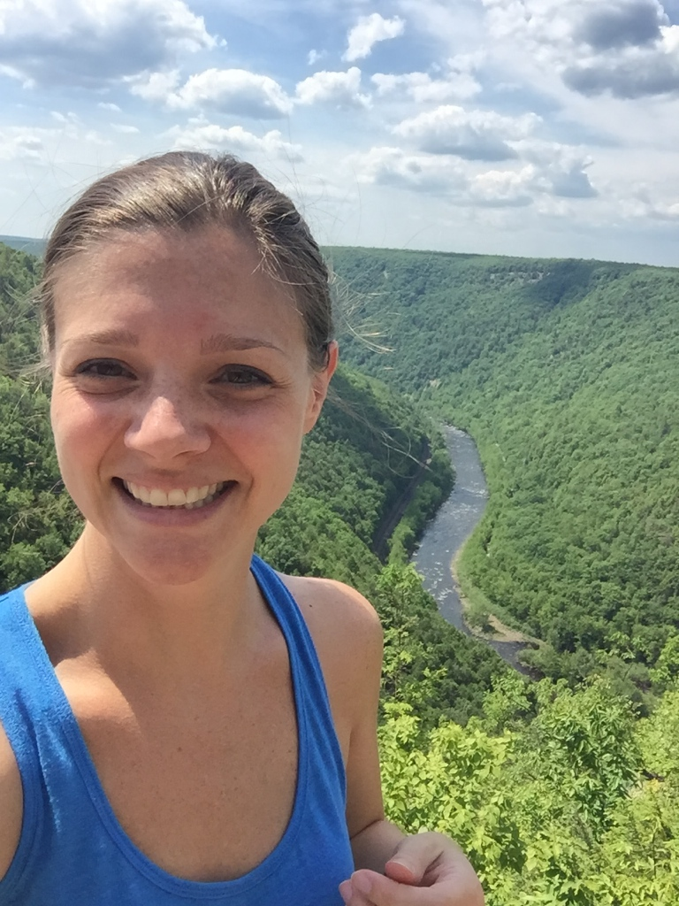

About Me
I am a hardworking individual who is looking for a change in careers. I currently work as a Quality Assurance Specialist in Biopharmaceuticals. I have the joy of making sure everyone else is doing their job correctly.
When I am not auditing and reviewing data, I enjoy riding my bicycle. I stopped saying I like to bike because what usually follows after is I like to hike. I do love to rhyme accidentally but it just sounds corny.
Connect with Me